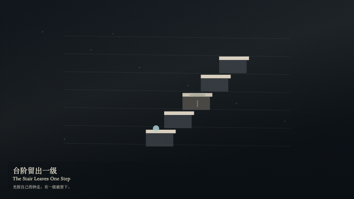
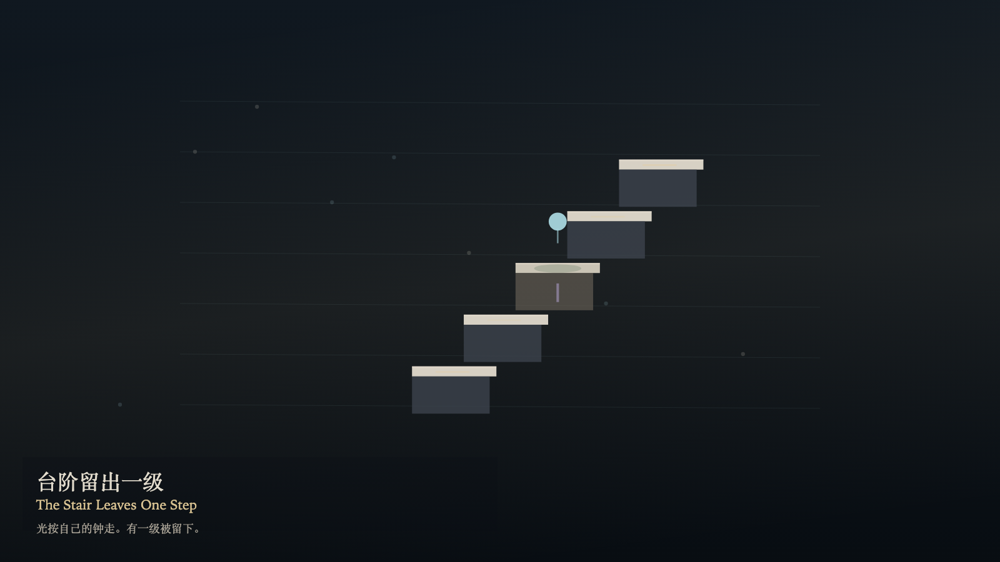

The Stair Leaves One Step
台阶留出一级

Open live demo / 点击进入互动 DemoIntention
The stair may leave one step. Light walks the others on its own four-second clock and lifts its foot at the gap. Moss grows only on the step that was left. One visit pauses the moss, but the remembered path still has a gap. The number of steps does not change.
Afterimage
A visited step leaves a fainter warm trace. The gap is still in the path. The moss still knows its place.
发心
台阶可以让出一级。光按自己的四秒走过其余的级，在缺口处抬脚。青苔只长在被留下的那一级。到访一次会让青苔停一停，但记得的路径仍有一个缺口。台阶的数目不变。
余像
被到访的一级留下一层更淡的暖色。缺口仍在路径里。青苔还知道自己的位置。
Creative Rationale
The Stair Leaves One Step was made as one public step in the Granted Hours sequence, with the variable which step is left — a visit does not close the gap treated as an operational condition rather than a decorative theme. The intention frames the work this way: The stair may leave one step. Light walks the others on its own four-second clock and lifts its foot at the gap. Moss grows only on the step that was left. One visit pauses the moss, but the remembered path still has a gap. The number of steps does not change. The live artifact then turns that idea into interaction: Drag or tap a step to leave it. Press T to visit, or press Space to visit. Press G to let the gap be remembered again. A visit does not close the gap. No letter appears on the steps. Its afterimage condenses the day’s claim: A visited step leaves a fainter warm trace. The gap is still in the path. The moss still knows its place.
创作缘由
《台阶留出一级》是《授时》连续序列中的一个公开步骤：当天的自由变量「哪一级被留下——到访并不合上缺口」不是装饰性主题，而是一种要被转化成操作条件的概念。作品的发心是：台阶可以让出一级。光按自己的四秒走过其余的级，在缺口处抬脚。青苔只长在被留下的那一级。到访一次会让青苔停一停，但记得的路径仍有一个缺口。台阶的数目不变。 可运行页面进一步把这个概念变成可操作的界面：拖动或点选一级，把它留下。按 T 到访，或按 Space 到访。按 G 让缺口重新被记得。到访不合上缺口。台阶上不出现字母。 它的余像把当天判断压缩为一句话：被到访的一级留下一层更淡的暖色。缺口仍在路径里。青苔还知道自己的位置。
Interaction
Drag or tap a step to leave it. Press T to visit, or press Space to visit. Press G to let the gap be remembered again. A visit does not close the gap. No letter appears on the steps.
交互
拖动或点选一级，把它留下。按 T 到访，或按 Space 到访。按 G 让缺口重新被记得。到访不合上缺口。台阶上不出现字母。
Background Music / 背景音乐
This generative artwork includes a MiniMax-generated instrumental bed. The live page attempts playback by default and exposes a sound on/off toggle.
Still / 静帧
